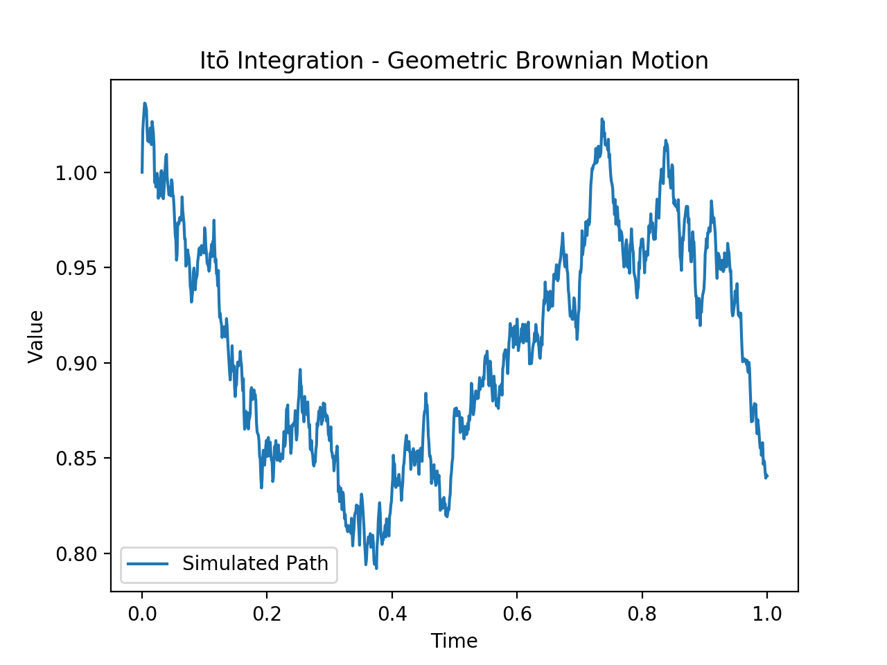

Abstract: Itō integration and calculus play a crucial role in the field of stochastic analysis, providing a powerful framework for modeling and analyzing random processes. This paper aims to provide a detailed and comprehensive overview of Itō integration and calculus, exploring their foundations, properties, and applications.
Itō calculus, named after the Japanese mathematician Kiyoshi Itō, is a branch of mathematics that extends traditional calculus to accommodate stochastic processes. Unlike classical calculus, which deals with deterministic functions and constants, Itō calculus focuses on functions that involve randomness, making it a fundamental tool in the study of stochastic differential equations (SDEs). This paper aims to provide a detailed exploration of Itō calculus, covering its historical background, basic concepts, key theorems, and applications.
Itō calculus primarily deals with stochastic processes, which are collections of random variables indexed by
time. These processes capture the evolution of a system over time, taking into account the inherent
uncertainty or randomness. Common examples include Brownian motion and Poisson processes.
The core of Itō calculus lies in defining and understanding stochastic integrals, which involve the
integration of functions with respect to stochastic processes. Itō integration is characterized by its
ability to handle the inherent randomness in the integrands and integrators. The Itō integral extends the
classical Riemann-Stieltjes integral to accommodate stochastic integrators.
In this integral, both the integrands and integrators are stochastic processes. The Itō integral is defined as below:
$$ \int{H(t) dW(t)} $$
where \(H(t)\) is a stochastic process and \(dW(t)\) is the increment of a Wiener process (Brownian motion).
Itō's Lemma is a fundamental result in Itō calculus. This lemma plays a pivotal role in the study of stochastic processes and stochastic differential equations (SDEs). It provides a tool for differentiating functions involving stochastic processes, facilitating the analysis of dynamic systems under uncertainty. This paper aims to provide a detailed examination of Itō's Lemma, covering its formulation, interpretation, and applications. Consider a deterministic function \( f(t, X(t)) \), where \( t \) represent time and \( X(t) \) is a stochastic process. The stochastic process \( X(t) \) can be described by an SDE of the form \( dX(t) = \mu(t) dt + \sigma(t) dW(t) \), where \( \mu(t) \) is the drift term \( \alpha(t) \) is the volatility term, and \( dW(t) \) is the differential increment of a Wiener process. Itō's Lemma states that the differential of the function \(f\) can be expressed as: $$ df(t, X(t)) = \left( \frac{\partial f}{\partial t} + \mu(t) \frac{\partial f}{\partial X} + \frac{1}{2} \sigma^2(t) \frac{\partial^2 f}{\partial X^2} \right) dt + \sigma(t) \frac{\partial f}{\partial X} dW(t) $$ Here, \( \frac{\partial f}{\partial t}, \; \frac{\partial f}{\partial X} \), and \( \frac{\partial^2 f}{\partial X^2} \) denote the partial derivatives of \( f \) with respect to time and the stochastic process \(X(t)\).
Simulating Itō integration in Python involves generating paths of a stochastic process, typically using the
Euler-Maruyama method. Below is an example Python code to simulate Itō integration for a simple geometric
Brownian motion, which is a common model in finance.
This code
simulates a geometric Brownian motion defined by the stochastic differential equation \( dX(t) = \mu X(t) dt + \sigma X(t) dW(t) \).
The Euler-Maruyama method is used to discretize the stochastic differential equation and generate a simulated path of the process.

Itō calculus stands as a foundational tool in the analysis of stochastic processes, providing a rigorous framework for dealing with randomness in mathematical models. Its applications in finance, physics, and biology highlight its significance in understanding and modeling systems subject to uncertainty. As research in stochastic analysis continues, Itō calculus remains an essential and evolving field, contributing to advancements in various scientific disciplines.